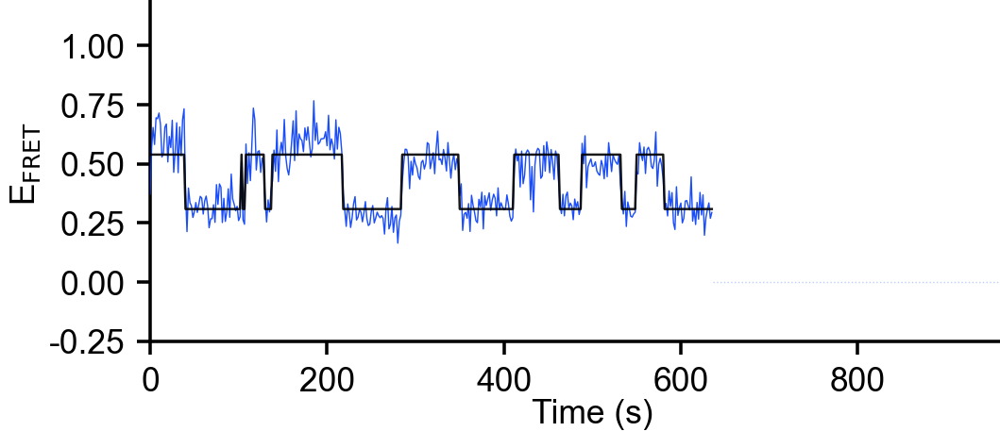
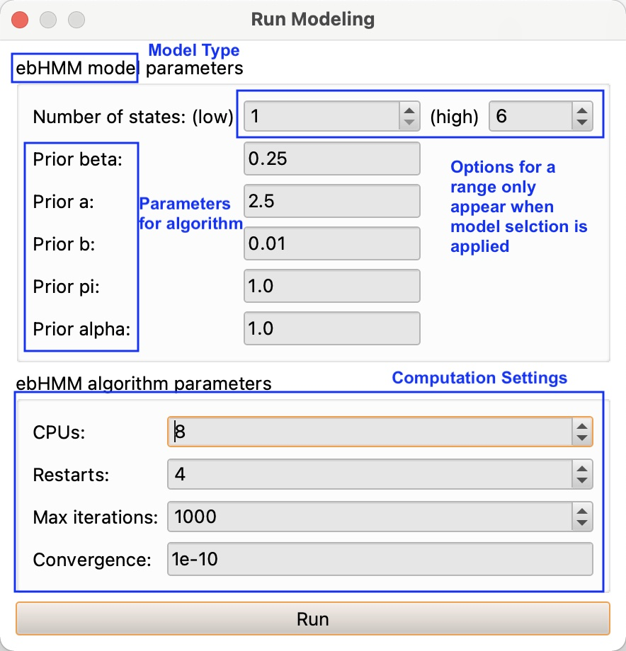

4. Modelling
Possibly the most important feature of tMAVEN is its ability to generate models using various algorithms. Users can also use a variety of plots to assess the performance of those models. For more information on Bayesian inference and use of Hidden Markov Models (HMMs) to model single-molecule data (see Kinz-Thompson, Ray, and Gonzalez 2021). A majority of tMAVEN’s algorithms use HMMs which model a time series as transitioning between discrete states hidden by noise.

Generating Models
There are many models to choose from under Modeling/FRET Modeling. One important aspect of these models is whether or not Model Selection is utilized. Without model selection, the user must know and input the number of states, however, if that number is unknown, some algorithms may determine it themselves (see figure). These papers elaborate on that selection: For vbFRET (Bronson et al. 2009) and ebFRET (Meent, Bronson, and Gonzalez 2014)

When running any model, users also have to input some computational settings (see figure). It is recommended to just leave the defaults. The number of restarts corresponds to the number of times the algorithm will restart with different initializations, in order to ensure this state does not affect the final result. The setting for the convergence determines at what relative change in cost function the algorithm will determine convergence has occurred. In case the convergence doesn’t occur, the algorithm will cut off after the max iterations.
Generating a Threshold Model
Under Modeling/FRET Modeling/Threshold is the simplest Model. The threshold model assigns every data point to one of two states dependent on whether it is greater than or less than a user-specified threshold. Threshold models calculate average emission values, means, variances, and fractions of the two states visible in the log.
Generating a Mixture model
Under Modeling/FRET/Mixtures are various models that simply cluster the data from all traces either by K-means or by a Gaussian mixture model (GMM) with either a maximum likelihood (mlGMM) or a variational Bayesian (vbGMM) technique (Bishop 2006). If the number of states is unknown, users can also choose to use model selection (see above) with variational Bayesian (vbGMM + Model Selection). Mixture models calculate average emission values, means, variances, and fractions of k states visible in the log.
Generating a Composite HMM Model
Composite models under Modeling/FRET Modeling/Composite HMMs create a hidden Markov model (HMM) for each trace and then cluster them in various ways. This single clustered model is then used for the idealized paths shown on each trace.
To generate the HMMs, users can choose either a maximum likelihood algorithm (mlHMM, McKinney, Joo, and Ha 2006) or variational Bayesian algorithm (vbHMM, Bronson et al. 2009). If the number of states is unknown, users can also choose to use model selection (see above).
Once HMMs have been generated, they are clustered in various ways: K-means, vbGMM and Threshold which have been elaborated above. The means, variances and fractions of the states from the clustered model can be found in the log.
Generating Global HMMs
vbConsensus (variational Bayesian, TMAVENPAPER?) and ebHMM (empirical Bayesian, Meent, Bronson, and Gonzalez 2014) are both consensus methods, in that they generate one HMM from the entire data set. In addition to means, variances, and fractions, the consensus methods yield a transition matrix, which may be found in the log or under Analyze Dwell Times as discussed below.
Dwell Time Plots and Analysis
Once a model is run and the number states and their means and transition matrices are calculated, tMAVEN can analyze a data set in terms of dwell times. Before analyzing, go to modeling/Analyze Dwell Times, select your model with Change Active and hit calculate (see figure). To look at a graph for the dwell of a specific state, choose the desired state under rate analysis and input whether it is expected to be a single, double, or triple exponential and hit run. Under results, the “Rate type” will read “Dwell Analysis”, and rates and coefficients will be shown according to the form of the equation selected. For instance a double exponential will show two rates and two coefficients according to the equation \(y=A_1e^{-r_1t}+A_2e^{-r_2t}\).


Then, either navigate to plots/Dwell Times or simply hit Plot in the Dwell Times section of Run Dwell Analysis (see figure). Now that the plot is made (see figure), a histogram of the dwell time is displayed, an exponential decay function. The presets show the y axis on a log scale and the model, theoretical dwell, off. Alter these in the preferences on the left (see figure).
If any series do not appear, or do not update when dwell\(\_\)state is changed, navigate back to modeling/analyze dwell times and hit calculate again, turn off and on the active model, or hit refresh in the top left corner of the dwell time plot (see figure).